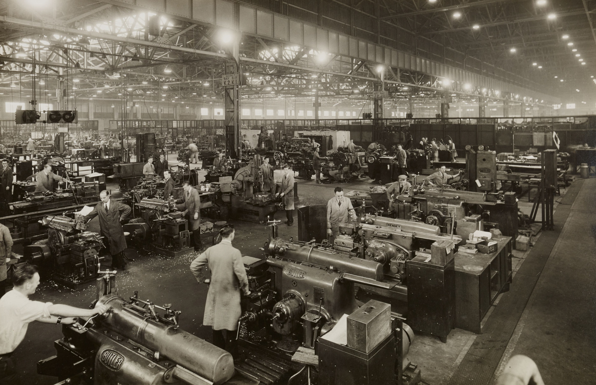

Automation Choices

Early automation already shows a negative effect on society; technological unemployment, which is the displacement of workers in an industry due to introduction of new technology, most commonly in a form of machinery. Linking to the opportunities earlier, industry generally chooses to replace human factor with machinery due to those reasons. However, it is also argued that it creates jobs in the industry producing these machines, and that workers are more shifted to being specialised in supervising these machineries, instead of working in the production line (Feldmann, 2013).
There are also the general society’s attitudes toward automation. This can be case by case; some people may resent automation in industry due to the issue previously regarding job redundancy, some may like the idea for self-driving cars or even smaller systems like automatic braking system (Parasuraman & Riley, 1997).
On a more philosophical level, automation is questioned when it concerns ethical problems during its performance. The issue highlighted when discussion of self-driving cars emerge is the trolley problem. The trolley problem in the traditional thought experiment is when someone is presented a switch to a track, and if left alone, the trolley will run over 5 people. If the switch is activated, the trolley will move onto another track where it will run over one person. Self-driving cars debates adapt this thought experiment, and the argument is about how automated systems can make morally important decisions (Roff, 2018).